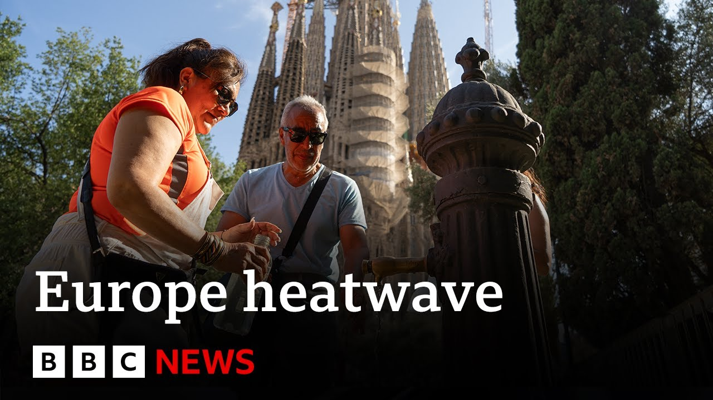

【BBC News 西班牙记录46摄氏度高温，欧洲热浪持续 20250701】
Summary: Europe is experiencing a severe heatwave, with temperatures exceeding 40°C in some countries, leading to health warnings, wildfires, and record-breaking heat in Spain.
摘要： 欧洲正经历严重热浪，部分国家气温超过40°C，引发健康警告、野火，西班牙出现破纪录高温。

⏱️ Estimated Reading Time: 10 min
📚 六级生词 📚 雅思生词 📚 托福生词 📚 专八生词 📚 SAT生词 📚 考研生词 📚 GRE生词 📚 高考生词
Europe's being gripped by a heat wave with temperatures in some countries in excess of 40° C as the hot weather reaches its peak.
欧洲正遭受热浪侵袭，部分国家气温超过40°C，高温天气达到顶峰。
Take a look at this map.
看看这张地图。
It shows the heat with Spain, France, and Italy all issuing warnings about the impact of the weather on people's health.
地图显示高温，西班牙、法国和意大利均发布天气对健康影响的警告。
The extreme heat in Spain has seen a temperature of 46° recorded in the town of El Granadoo.
西班牙极端高温下，埃尔格拉纳多镇记录到46°C。
That's the hottest June day ever, according to the country's National Weather Service.
据该国国家气象局称，这是有史以来最热的六月天。
Alongside the increasing temperatures is the risk of wildfires.
伴随气温上升的是野火风险。
Firefighters are continuing to fight blazes in the city of Isizmir on the Aian coast, which has forced people to leave their homes.
消防员继续在艾安海岸的伊兹密尔市扑灭火势，迫使人们离开家园。
Let's speak to Jim Dale, a senior meteorologist with the British Weather Services and author of Weather Or and Surviving Extreme Weather.
让我们与英国气象局高级气象学家、《天气与否》和《生存极端天气》作者吉姆·戴尔交谈。
Jim, good morning to you.
吉姆，早上好。
Still cool at just gone 7 a.m., but how hot are we expecting things to get?
早上7点刚过还算凉爽，但我们预计气温会升到多高？
Uh, Uh, today in the UK, we're probably going to see the 34° C mark, which is 93° Fahrenheit.
呃，今天英国可能会达到34°C，即93华氏度。
So, definitely hot enough.
所以绝对够热。
You mentioned the Caribbean already.
你已经提到加勒比地区。
I'm sure we'll be up around that sort of area.
我确信我们会接近那个范围。
Uh, the record, by the way, for June is 35.6.
顺便说一下，六月的记录是35.6°C。
That was back in 1976, the heat wave that we had then.
那是1976年，当时的热浪。
uh 35.6 down in Southampton.
南安普顿曾达到35.6°C。
Not sure we're going to quite get there, but there's a there's a challenge on we we we will see as the day as the day wears on.
不确定是否能达到，但随着时间推移我们会看到挑战。
What's causing What's causing this, Jim?
是什么导致了这种情况，吉姆？
Well, it's not just the UK.
这不只是英国的问题。
This is the whole of Europe.
这是整个欧洲的现象。
And when I say the whole of Europe and probably expand that into America and parts of Asia as well, because this is a phenomena.
当我提到整个欧洲时，可能还包括美洲和亚洲部分地区，因为这是一种现象。
Um yeah, it's a heat dome.
嗯，是的，这是热穹顶。
We we get heat waves, that's absolutely fine, but it's being topped and it's being topped by climate change, uh global warming.
我们会有热浪，这很正常，但气候变化和全球变暖加剧了它。
There is no doubt about that.
这一点毫无疑问。
One of the main instigators of this is the Mediterranean Sea uh for ourselves.
主要诱因之一是地中海。
That is because it's it's at record levels.
因为它的温度处于创纪录水平。
It's only June at record levels by some way.
这才六月，就已经以某种方式创下纪录。
So when the the air moves out of Africa, North Africa into uh Europe and across that Mediterranean, it doesn't really cool down that much.
所以当空气从非洲、北非进入欧洲并穿过地中海时，它并没有明显降温。
So the great land masses of of Europe and on the other side America and Asia, it's just a perpetual warming uh situation.
因此，欧洲大陆以及美洲和亚洲大陆正经历持续变暖。
So that kind of thing is is is the reason why we're seeing these temperatures at this time of year, which is quite unusual.
这就是为什么我们在一年中这个时候看到如此异常的高温。
Uh only three times in the in on record have we seen these sort of temperatures getting up to around 34 35.
有记录以来，只有三次达到34-35°C左右。
So it is an unusual time, but I think I think what we're seeing is is definitely taught by climate change.
所以这是一个不寻常的时期，但我认为我们看到的绝对是气候变化的结果。
Well, let's talk more about that because climate change is seen as um well, the the effects of climate change are seen as a relatively recent thing.
让我们进一步讨论，因为气候变化的影响被视为相对近期的事情。
But you mentioned, you know, 1976 earlier, that's nearly 50 years ago.
但你之前提到1976年，那是近50年前。
Talk to us about how climate change is impacting these weather events we're seeing and and where the kind of curve goes.
请谈谈气候变化如何影响我们看到的天气事件，以及趋势如何发展。
Yeah. Yeah.
好的。
Okay.
好的。
So, yeah, you mentioned 1976 and you say, well, where where was climate change at that time?
你提到1976年，问那时气候变化在哪里？
Well, look, we do get heat spikes.
听着，我们确实会有高温峰值。
We do get heat domes.
我们确实会有热穹顶。
That that's without a question.
这是毫无疑问的。
But what you got to do here is you've got to join the dots.
但你需要做的是将点连成线。
Join the dots around the world.
将全球的点连起来。
See what is going on.
看看发生了什么。
And we talk about the the effects of of climate change.
我们谈论气候变化的影响。
Uh then yeah, we're talking about wildfires that are breaking out not just in the United States, but across Europe as well.
是的，我们谈论的野火不仅发生在美国，还有欧洲。
And they will only get worse with time.
而且情况会随时间恶化。
We're talking about deaths as well.
我们也在谈论死亡。
when we get to these sort of temperatures for the last 3 years 2022 23 24 we've seen in the region in Europe uh according to the health authorities around about 160,000 excess deaths because of the heat mainly in the infirm the elderly and the very young but nonetheless this is getting to critical points once you pass the the natural body heat of of around 36 and a half degrees we're struggling to you lose our our inner temperature you know your sweat doesn't go very far very quickly and Therefore, it does have a profound effect on how we live, what we do, and sadly in terms of uh in terms of um uh fatalities.
过去三年（2022、23、24年）达到这种温度时，欧洲地区据卫生当局统计约有16万超额死亡，主要影响体弱者、老人和幼儿。一旦超过人体自然温度约36.5°C，我们会难以调节体温，汗水蒸发缓慢，因此对生活、行为乃至死亡有深远影响。
Uh it it's it's tending to go in the wrong direction.
趋势正在朝错误方向发展。
Well, Jim, I've got to be honest from you.
吉姆，我得说实话。
I'm from the north of Scotland, so anything double digits for me is a heat wave as far as I'm concerned.
我来自苏格兰北部，所以两位数温度对我而言就是热浪。
What can people do when it does get to these kinds of temperatures to keep themselves cool, especially if, as you say, they're elderly or very young or vulnerable?
当温度如此之高时，人们尤其是老人、幼儿或体弱者该如何保持凉爽？
Okay.
好的。
Well, couple of things.
有几件事。
The first thing to say is keep out the direct sunshine because when we talk about these temperatures, these are shade temperatures.
首先是避免阳光直射，因为我们说的温度是阴凉处温度。
So in the sunshine, you can add 10 or 15° Celsius to that.
阳光下温度会再高10-15°C。
So that's the first thing, keep away from direct sunshine.
所以第一点是远离阳光直射。
The second thing is to hydrate yourself.
第二是补充水分。
Thirdly, uh wear light light clothing, cotton clothing.
第三，穿轻薄棉质衣物。
Um keep yourself cool in that respect.
以此保持凉爽。
Maybe have your fan on.
可以开风扇。
Make sure it's it's it's in a position where you're feeling that air moving around.
确保风扇位置能让空气流通。
Close your curtains.
拉上窗帘。
I should say into the future, we need a we need a change in terms of the way we're approaching this.
未来我们需要改变应对方式。
We need to act more like southern Mediterranean countries, how they act.
我们需要更像南地中海国家那样行动。
So, shutters on south facing windows, for example.
例如，在南向窗户安装百叶窗。
Our diet changes.
改变饮食。
It needs to change.
必须改变。
You know, eating, how can I put this in the right way?
怎么说呢？
Eating pie and chips, you know, in temperatures of this isn't the way to go.
在这种温度下吃馅饼和薯条不合适。
We've got to act like a Mediterranean diet.
我们应该采取地中海饮食。
Eat that sort of thing and we'll be better with it.
吃这类食物会更好。
We need cooling stations, hydration stations in town centers, village centers, etc.
我们需要在城镇中心设立降温站和补水站。
so that people can cool off for free because this is only going to get worse.
让人们免费降温，因为情况只会更糟。
This is a one-way street and need to make this absolutely clear.
这是单行道，必须明确。
This although this feels like a a oneoff and we do get one-offs occasionally, you knit this together as I say and it and it's perpetual and it's getting more.
虽然这像一次性事件且偶尔发生，但如我所说是持续且加剧的。
So, we've got to start to educate ourselves.
所以我们必须开始自我教育。
the government have got to step in and educate the the population in terms of what to do.
政府必须介入并教育民众应对方法。
Not just in terms of heat waves, but also in terms of storms, in in terms of the wildfires that we're seeing, what to do and how to do it, how to stay safe is is a big is a big a big thing moving forward.
不仅是热浪，还有风暴、野火，如何应对和保持安全是未来的大事。
Okay.
好的。
Okay.
好的。
Jim Dale, author of Weather or Not and Surviving Extreme Weather.
吉姆·戴尔，《天气与否》和《生存极端天气》作者。
Jim, uh I'm sure you won't be having pine chips for lunch, but uh thanks very much for joining us.
吉姆，我确定你不会午餐吃松木薯条，但非常感谢参与。
Appreciate it.
感谢。